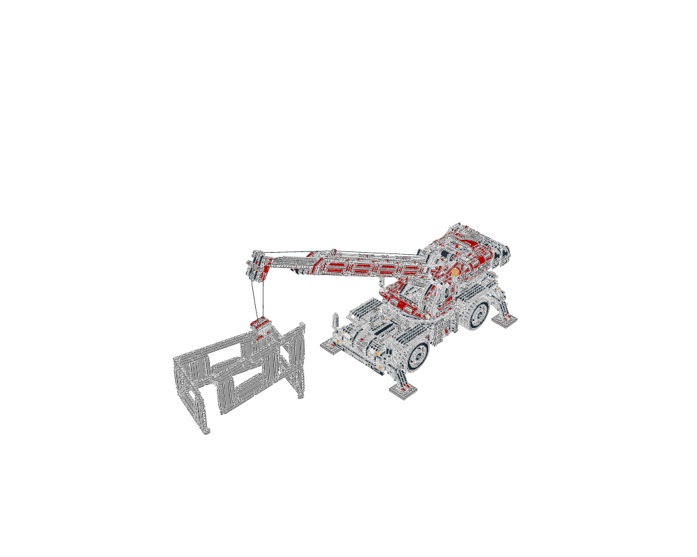
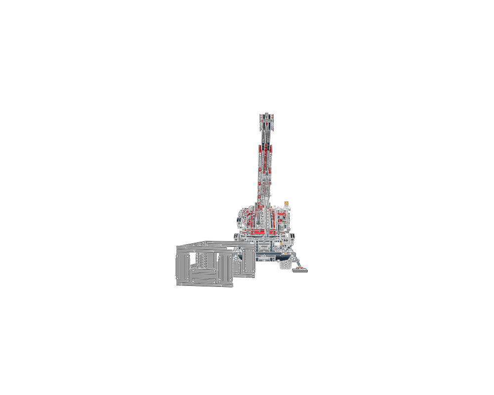
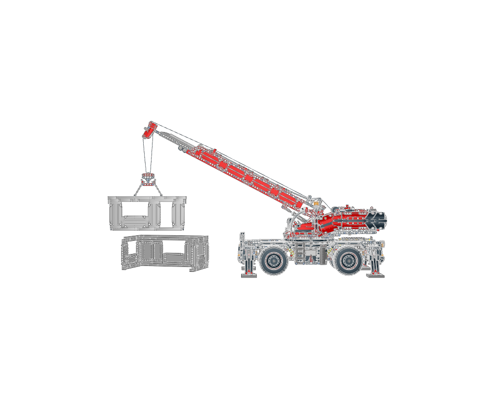
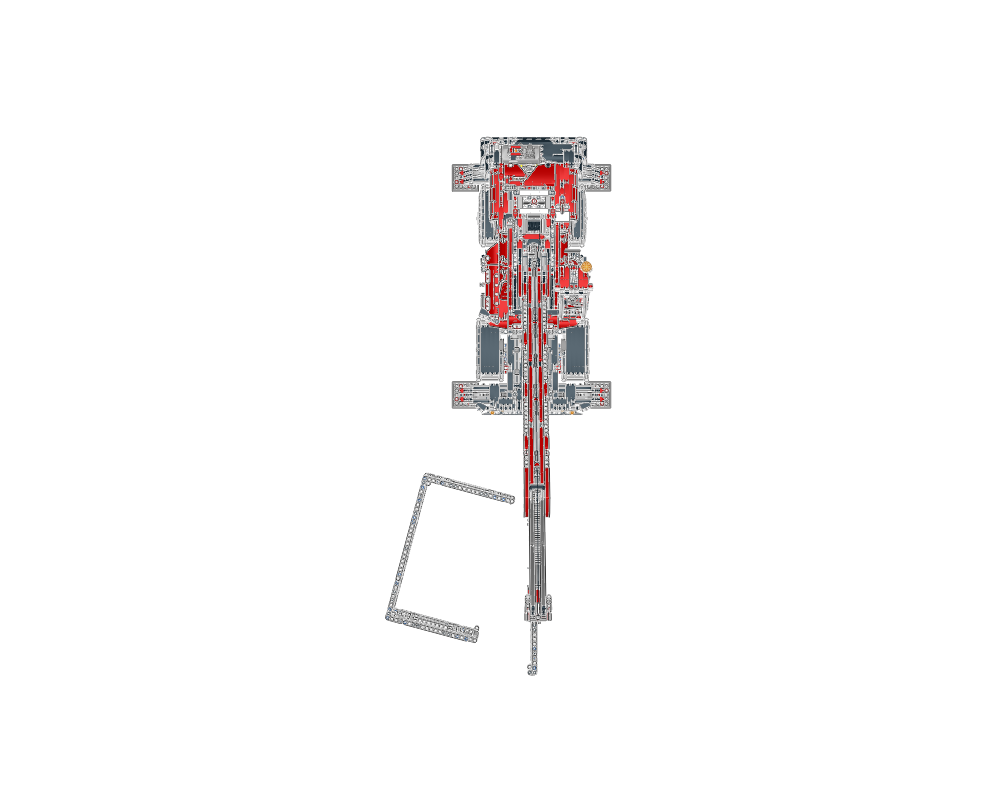

Rough terrain crane precedent
Whole-model study · 5025 parts. These images show the completed assembly, not construction steps.
Attributed source · Editable plan · Provenance · Checks · Section and step data
- lesson
- construction
- interfaces
- parent context
- reuse notes

home
front
right
topSections to study separately
Use manual prepare on a selected source section to create its build pages.
- 42082 - main.ldr — 126 source steps
- 42082 - gearbox.ldr — 4 source steps
- 42082 - gearbox2.ldr — 2 source steps
- 42082 - gearbox3.ldr — 3 source steps
- 42082 - gearbox4.ldr — 7 source steps
- 42082 - gearbox5.ldr — 3 source steps
- 42082 - transmission.ldr — 3 source steps
- 42082 - gearboxbeam.ldr — 2 source steps
- 42082 - gearboxbeam2.ldr — 2 source steps
- 42082 - axle1.ldr — 17 source steps
- 42082 - axle1a.ldr — 4 source steps
- 42082 - axle1b.ldr — 4 source steps
- 42082 - axle1c.ldr — 4 source steps
- 42082 - axle2.ldr — 17 source steps
- 42082 - axle2c.ldr — 4 source steps
- 42082 - outrigger.ldr — 14 source steps
- 42082 - outriggerarm1.ldr — 3 source steps
- 42082 - outriggerarm2.ldr — 3 source steps
- 42082 - outriggergears.ldr — 2 source steps
- 42082 - rear.ldr — 4 source steps
- 42082 - rear2.ldr — 4 source steps
- 42082 - engine.ldr — 12 source steps
- 42082 - calandar.ldr — 5 source steps
- 42082 - fence.ldr — 3 source steps
- 42082 - rollerring.ldr — 2 source steps
- 42082 - rollerringeihth.ldr — 2 source steps
- 42082 - ringtop.ldr — 6 source steps
- 42082 - sidepanel1.ldr — 9 source steps
- 42082 - sidepanel2.ldr — 9 source steps
- 42082 - mudguard1.ldr — 5 source steps
- 42082 - mudguard2.ldr — 5 source steps
- 42082 - headlight1.ldr — 3 source steps
- 42082 - headlight2.ldr — 3 source steps
- 42082 - taillight1.ldr — 3 source steps
- 42082 - taillight2.ldr — 3 source steps
- 42082 - wheeldisc.ldr — 1 source steps
- 42082 - slewingtop.ldr — 37 source steps
- 42082 - slewingtop2.ldr — 3 source steps
- 42082 - slewingtop3.ldr — 10 source steps
- 42082 - slewingtop4.ldr — 10 source steps
- 42082 - slewingtop5.ldr — 4 source steps
- 42082 - slewingtop6.ldr — 2 source steps
- 42082 - powerFuncMotorL-1.ldr — 1 source steps
- 42082 - slewingtop7.ldr — 2 source steps
- 42082 - ropeLQ-1.ldr — 1 source steps
- 42082 - slewingtoptrans.ldr — 2 source steps
- 42082 - boom.ldr — 19 source steps
- 42082 - boom2.ldr — 6 source steps
- 42082 - boom3.ldr — 9 source steps
- 42082 - boom4.ldr — 4 source steps
- 42082 - boom5.ldr — 10 source steps
- 42082 - boomextend.ldr — 1 source steps
- 42082 - boom6.ldr — 4 source steps
- 42082 - boomtip.ldr — 3 source steps
- 42082 - boomtip2.ldr — 2 source steps
- 42082 - hook.ldr — 4 source steps
- 42082 - sidepanel3.ldr — 4 source steps
- 42082 - sidepanel4.ldr — 5 source steps
- 42082 - sidepanel5.ldr — 4 source steps
- 42082 - sidepanel6.ldr — 4 source steps
- 42082 - backpanel.ldr — 6 source steps
- 42082 - backpanel2.ldr — 4 source steps
- 42082 - backpanel3.ldr — 4 source steps
- 42082 - cabin.ldr — 13 source steps
- 42082 - seat.ldr — 2 source steps
- 42082 - steerwheel.ldr — 5 source steps
- 42082 - door.ldr — 3 source steps
- 42082 - chaincrate.ldr — 2 source steps
- 42082 - cratehammer.ldr — 2 source steps
- 42082 - outriggerplate.ldr — 1 source steps
- 42082 - house.ldr — 8 source steps
- 42082 - wall1.ldr — 4 source steps
- 42082 - wall2.ldr — 4 source steps
- 42082 - wall3.ldr — 8 source steps
- 42082 - hookchain.ldr — 1 source steps
- 42082 - hookchain2.ldr — 1 source steps